Construyo la máquina que llena tus viajes, tus retiros o tus plazas — y la manejas hablando, como quien manda un audio. Lo humano lo sigues escribiendo tú.
Cuéntame tu comunidadSin compromiso. La primera conversación es una consultoría, no una venta.
«¿Y este de fuera no me va a despersonalizar la comunidad?»
No se automatiza lo humano. Los mensajes, los audios, las bienvenidas, la cara — eso es tuyo y ahí no entro. Automatizo todo lo demás: que la gente entre sola, que no se te escape nadie, que llenar deje de depender de que te acuerdes. Y que montar lo de cada viaje —el formulario, su web, el panel con toda tu gente— sea cuestión de decirlo en voz alta.
El problema real
01
Alguien te escribe: «me interesa, mándame info».
02
Le mandas el dossier. Contesta que le encanta.
03
«Sí, quiero ir.» Y tú ya cuentas con esa plaza.
04
Le pides la señal.
05
Cri cri. Y vuelta a empezar con el siguiente.
No falla el producto: falla que entre el interés y la reserva no hay nada — solo tú, contestando mensajes.
«Mucha gente me pide información y luego nunca acabo de hacer el enganche final. Ese es mi mayor problema.»
organiza retiros internacionales
«"Sí, quiero venir, quiero venir." Vale, pues hazme la paga y señal… y de repente, cri cri.»
llena sus plazas a mano
«La comunicación para mí es un trabajón.»
lidera retiros de yoga
«Esto se vende solo, está tirado… y luego no te escriben apenas y tienes que ir detrás.»
lanzó su primer viaje en grupo
Dos caminos
Lo que pasa si todo sigue dependiendo de ti.
Arrastra la barra de un lado al otro ↔
Cómo va hoy
Contestas los mensajes uno a uno.Contestas uno a uno.
Llenas a mano y tarde.Llenas a mano.
Comunicas cuando te sobra energía.Comunicas si te sobra.
Quien preguntó y no vino, se pierde.Los que no vinieron, perdidos.
Te comparan por precio.Te comparan por precio.
Con la máquina
La señal entra sola, con tu enlace.La señal entra sola.
Un calendario hacia atrás, con cifra.Calendario con cifra.
El grupo ya está caliente al abrir.El grupo, ya caliente.
Cada interesado, con su ficha.Cada uno, con su ficha.
Lo pilotas hablando.Lo pilotas hablando.
↔
Cómo funciona
Tres fases. Se empieza por la primera.
No es una agencia que te entrega cosas y se va. Es abrir tu negocio, montar la máquina, encenderla contigo — y que todo lo construido quede tuyo.
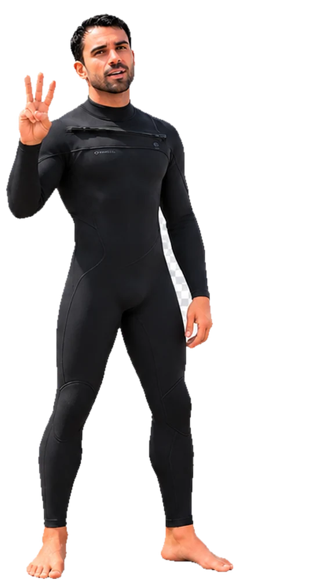
Fase 1
Consultoría y auditoría
Tu negocio abierto entero encima de la mesa: qué te da cada línea, qué embudo tiene cada una, qué funciona y qué está roto. Sales con un plan de acción escrito — tuyo, sigas conmigo o no. Y con cosas que puedes aplicar esa misma semana.
1
Lo que sale de la auditoría
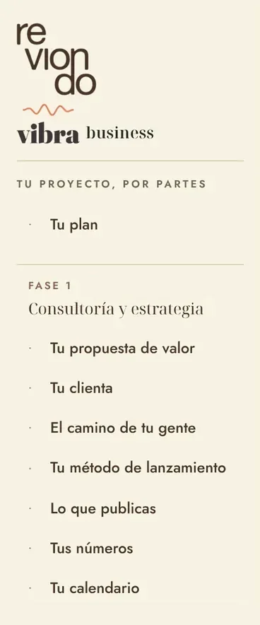
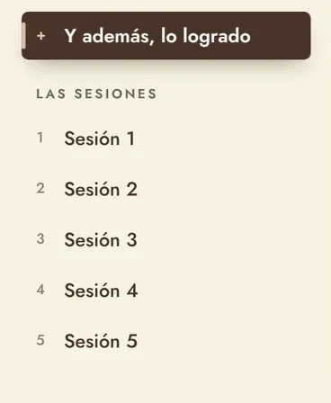
Así queda el panel de una clienta al cerrar la Fase 1: cada pieza de su estrategia, por partes y en un mismo enlace. Es el menú del de Sara · Reviondo. Desliza para verlo entero →
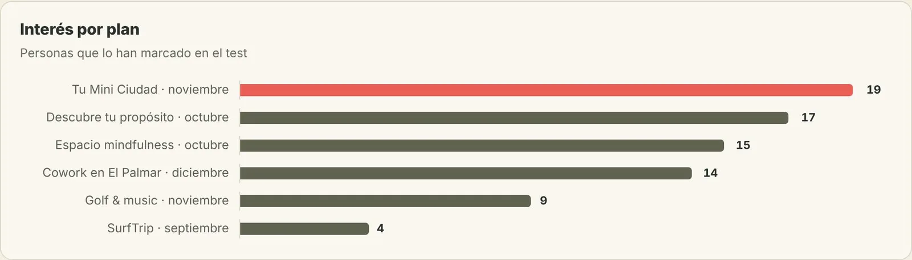
Qué planes pide tu gente antes de ponerles fecha: sale del registro de interesados, y con eso se decide el calendario. Desliza para verla entera →
Fase 2
Tu máquina
Todo lo que hoy te come horas — la web, los cobros, el grupo, el contenido, los datos, la publicidad — montado, conectado y funcionando. Tú aquí no construyes nada: la pruebas, te la explico y la manejas hablando. La lista de piezas no está en esta página a propósito: tu máquina se diseña sobre tu negocio, no sobre una plantilla. Y se queda tuya para siempre, sin permanencia.
2
La máquina, montada: el recorrido de Elena
Desliza para verlo →
1 Entra por su enlace
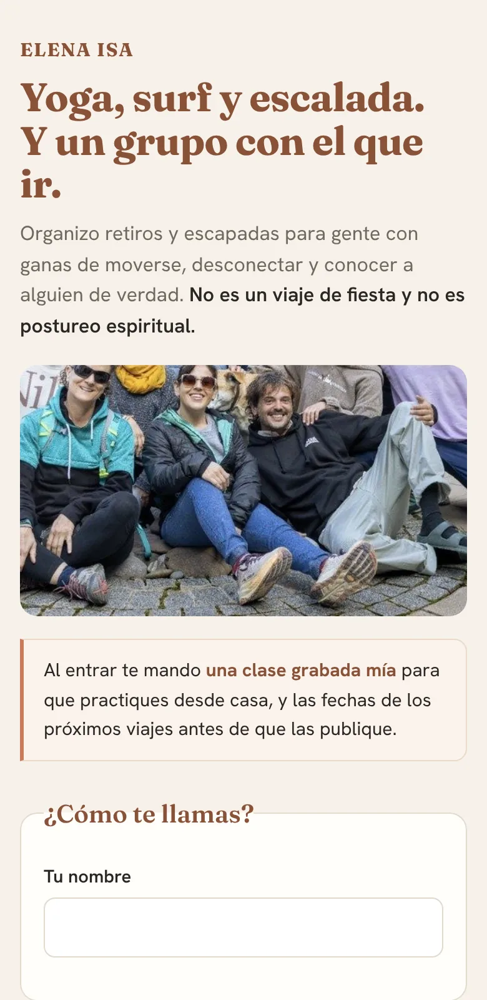
Un solo enlace en su bio: qué hace, para quién es y qué se lleva al entrar.
2 Rellena su formulario
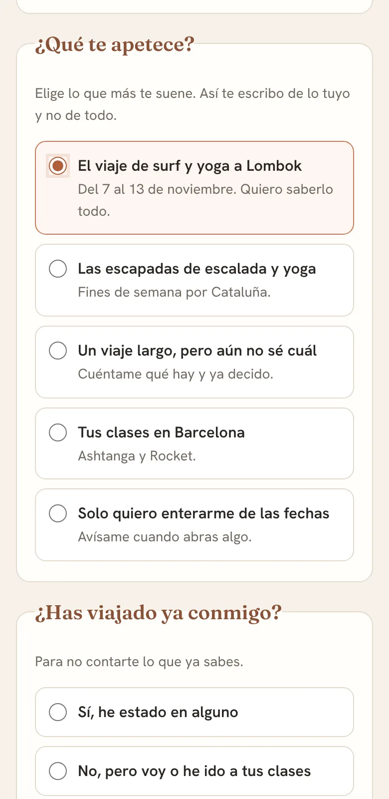
Dice qué viaje le apetece y si ya ha viajado con ella. Elena sabe a quién escribir, y de qué.
3 Su regalo, al reservar
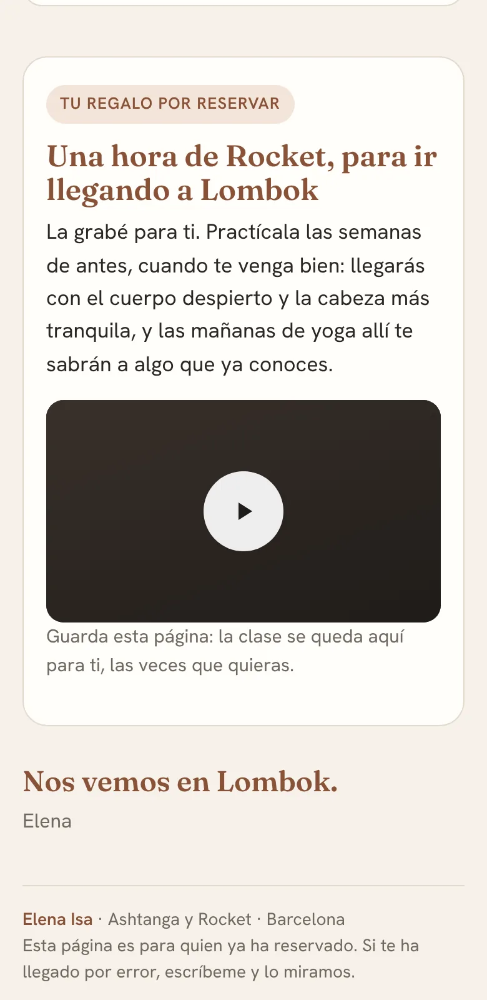
Paga la señal y aterriza aquí: su clase de yoga de regalo, sola. Elena no tiene que mandar nada.
Fase 3
Lanzamiento conjunto
Lanzamos con mi metodología y los tiempos marcados: cuándo se calienta, cuándo se abre y cuándo se cierra. Donde encaja, mi comunidad VIBRA empuja detrás. Y esta fase va en variable: si tú no ganas, yo no gano.
3
Cómo se monta un viaje
Desliza para verlo →
1 La portada del viaje
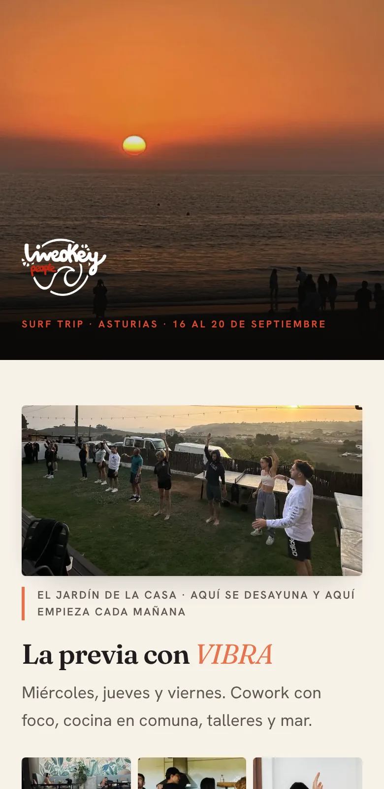
Quien reserva tiene su página: fechas, la previa y el plan de cada día.
2 Los días, por dentro
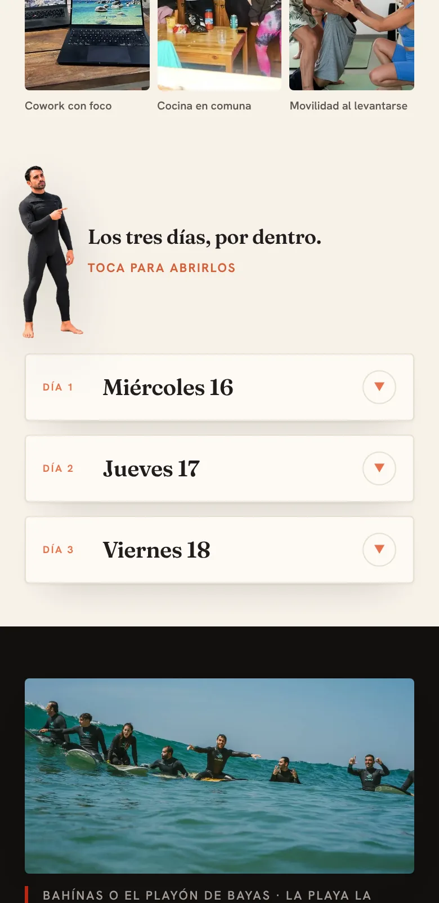
Cada día se abre con un toque, con horarios y quién lleva cada cosa.
3 El finde, hora a hora
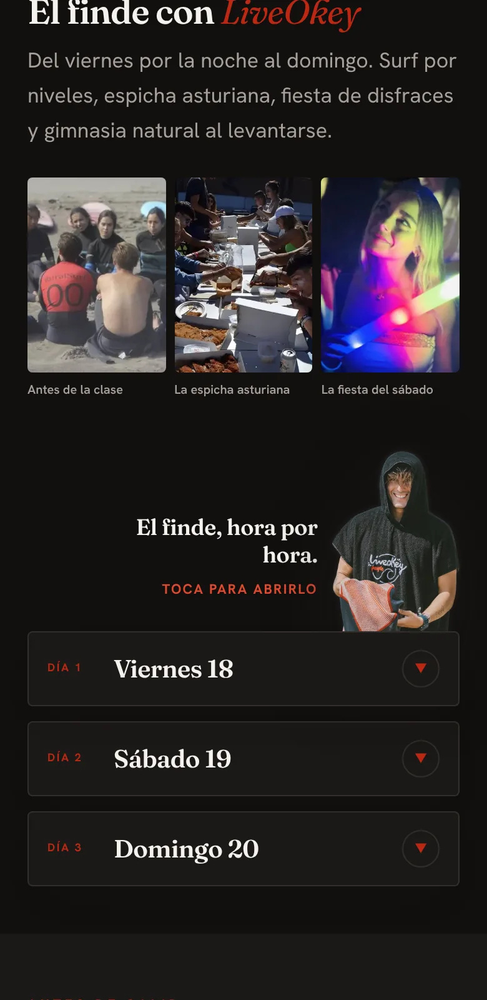
Surf, espicha y fiesta: nadie pregunta «¿a qué hora era?» en el grupo.
Ver el viaje montado →Se abre en otra pestaña. El planning hora a hora del viaje a Asturias con LiveOkey.
Clientes
Esto no es teoría. Es lo que hago cada semana.
Líderes de comunidades como la tuya, mi propia comunidad y los sistemas a más escala de los que sale el método.
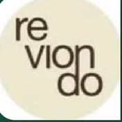
Comunidad + IA + retiros@reviondo.r
Sara · Reviondo — desconexión digital
De dónde partía
Retiros de fin de semana que funcionaban, y la temporada por decidir: sin calendario y sin programa detrás.
→
Lo que ya pasa
Su temporada con fechas hasta junio, su programa Modo Avión y su retiro de octubre celebrado, con muy buen feedback.
Fase 1 hechaTemporada con fechas hasta junioPrograma Modo Avión
Comunidad + IA + retiros@elenaisa_yoga
Elena Isa — yoga y retiros
De dónde partía
Retiros de yoga en Cataluña y Lombok, y mucha gente que preguntaba y no cerraba: «nunca acabas de hacer el enganche final».
→
Lo que ya pasa
Su test de entrada, su grupo de Lombok con su enlace de reserva y su calendario. El recorrido que ves arriba, en la Fase 2, es el suyo.
Test de entradaGrupo de Lombok con reservaSu recorrido, montado
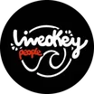
Growth partner desde 2024@liveokeypeople
LiveOkey — la comunidad de viajes de surf de la que soy growth partner
De dónde partía
Un año llevándole la web como proveedor externo. No sirvió de nada: el fundador estuvo a punto de dejarlo todo.
→
Qué consiguió
Su sistema entero montado y operado por mí en 10 h/mes — y la marca, el carisma y los mensajes siguen siendo suyos. Es exactamente lo que te propongo a ti.
Embudo automático de punta a puntaComunidad segmentada en dos nivelesLo opero en 10 h/mes
Cómo está montado
El embudoInstagram → web → grupo de puerta de entrada (los que aún no han viajado) → grupo de viajeros (los que ya han ido) → grupo de lanzamiento de cada viaje → grupo del viaje. Los que ya han viajado reciben la información primero, siempre. Eso no es un programa de puntos: es fidelización metida en la estructura.
La lección que me cambió la forma de trabajarEstuve un año llevándole la web como proveedor. No sirvió de nada: el fundador estuvo a punto de dejarlo todo. Lo que cambió las cosas fue dejar de entregarle encargos y pasar a estar dentro, respondiendo del crecimiento con él. Por eso hoy no vendo entregables sueltos.
Lo que no tocoLos viajes fijos, porque hacen marca. Y los mensajes a la comunidad, que los sigue escribiendo él. La voz de una comunidad es de quien la fundó.
El embudo real, pantalla a pantallaNo es un esquema: son las pantallas por las que pasa hoy alguien que descubre LiveOkey en Instagram.
Desliza para verlo →
1 La web
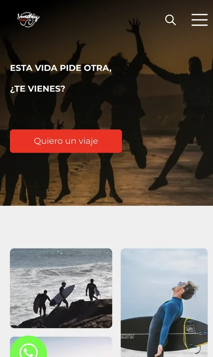
Todo el tráfico aterriza en un solo sitio, con el banner de entrada a la comunidad. Una decisión, sin salidas laterales.
2 Los datos
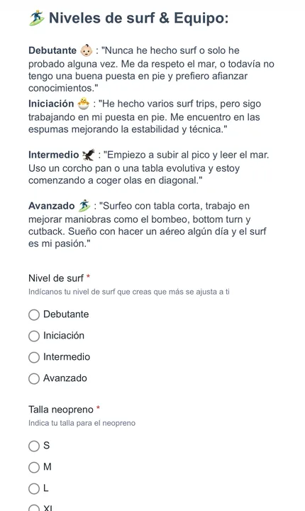
No pide solo un contacto: pregunta nivel de surf, talla de neopreno y qué te apetece. Se segmenta antes de entrar.
3 La puerta
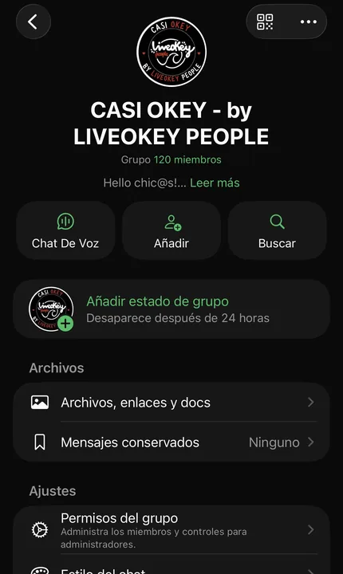
Casi Okey, 120 personas. Quien todavía no ha viajado espera aquí — y ya recibe la información antes que quien solo sigue el Instagram.
4 Los de dentro
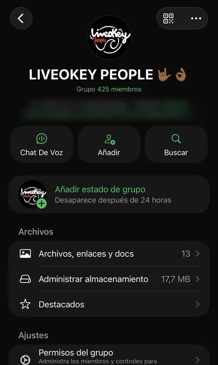
LiveOkey People, 425 personas que ya han viajado. Reciben cada viaje los primeros, siempre.
Tres niveles y un orden que no cambia: Instagram → Casi Okey → LiveOkey People. Quien ya ha viajado se entera antes — por eso un viaje se llena sin anunciarlo.
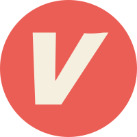
Mi comunidad@vibra.society
VIBRA — el mismo método, aplicado a mi comunidad
En julio
Cero. Sin comunidad, sin plataforma y sin datos: solo la idea.
→
En septiembre
Todo el calendario de la temporada, con prerreservas, y la comunidad de WhatsApp en más de 80 personas. No te voy a pedir nada que no esté haciendo yo.
De cero a temporada completa en dos meses+80 en el grupo de WhatsAppWeb, CRM y analítica conectados
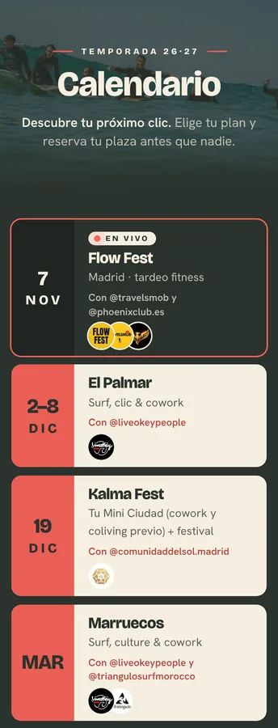
El calendario de la temporada, tal cual se ve hoy en vibrasociety.es.
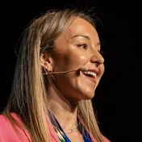
Crecimiento + suscripción@nutricionconq
Paloma Quintana — nutrición integrativa y deportiva
Crece con un modelo de suscripción detrás.
GÜOA escala@guotech.io
GÜO Tech — de idea a +3M€ facturados en un año
De dónde partía
Una idea y ninguna máquina: ni captación, ni CRM, ni lanzamientos.
→
Qué consiguió
+3M€ facturados en un año y +5.000 clientes activos al mes: anuncios → landing → CRM que calienta con contenido → lanzamientos por webinar y evento presencial.
+3M€ en un año+5.000 clientes activos/mesCRM implantado en 2 semanas
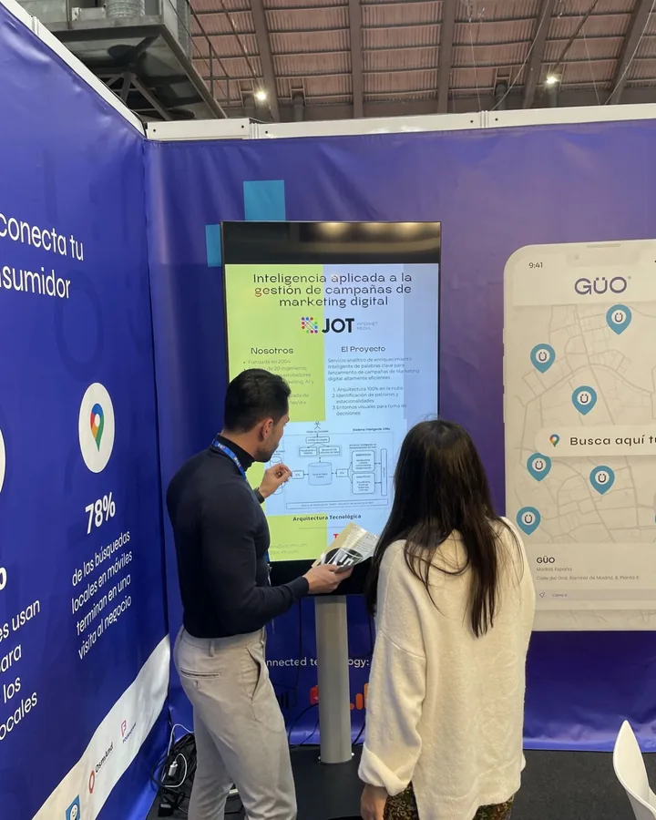
Los eventos presenciales, que aquí no eran escaparate: eran el sitio donde cerraba gente que ya llevaba meses calentándose.
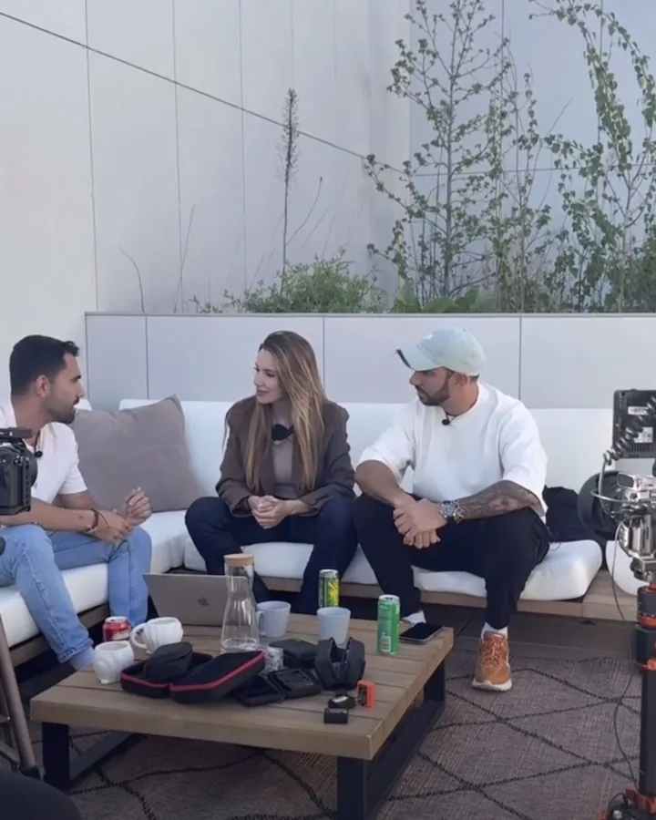
Y el contenido que alimenta al CRM: lo que hace que, cuando llega el lanzamiento, no haya que convencer a nadie.
Por qué te importa esto
Porque es exactamente la misma máquina que monto para una comunidad — solo cambia la escala y el producto. Los eslabones son los mismos: captar, aterrizar, calentar, lanzar. Y porque significa que lo que te propongo no lo he leído en ningún sitio: lo he construido con las manos, respondiendo de una cifra.
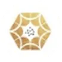
Comunidad + eventos@comunidaddelsol.madrid
Comunidad del Sol — covivienda consciente
De dónde partía
Vendían algo enorme —una forma de vivir, con ticket de vivienda— y no había camino entre descubrirles y comprar.
→
Qué consiguió
Embudo formalizado en cuatro etapas, con los eventos en el centro: el evento no es marketing, es el mecanismo de venta.
Embudo en 4 etapasEventos como motor de conversión
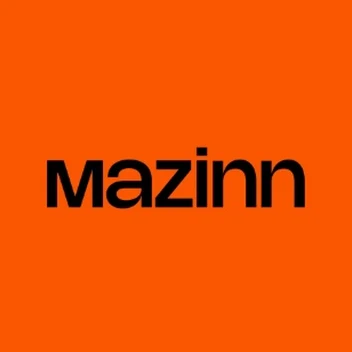
Automatización + IA@mazinncrew
Mazinn Crew — una comunidad de +2.000 embajadores
De dónde partía
Toda la operación de +2.000 embajadores se sostenía a mano, tarea por tarea.
→
Qué consiguió
Las 65 tareas que repetían cada mes, inventariadas y repartidas entre automatización, IA y las que deben seguir siendo humanas.
65 tareas inventariadasLo repetitivo, a la máquina
El diagnóstico
«El problema no es construir la automatización: es que hoy alguien tiene que acordarse de ejecutar todo en orden.»
Casi siempre pasa esto: no falta tecnología, falta que alguien la conecte. Y quien tendría que hacerlo es justo quien no tiene horas, porque se le van haciendo a mano lo que queremos automatizar.
Otros clientes y proyectosde estos 12 años
Orange · marketing automationGrupo MASMOVIL · retención B2BVodafone · cuenta gestionadaEntelgy · negocio y growthUna startup de vivienda · embudo y CRMDos desguaces · anuncios y bot de WhatsAppUn estudio audiovisual · marca, web y SEOUn glamping · ocupación
+3M€
facturados en un año por una scale-up que empezó con una idea y ninguna máquina.
Fuente: el caso GÜO Tech, aquí arriba. La misma máquina, a otra escala.
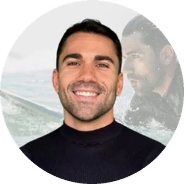
Quién te lo dice
Abraham Rojo
Llevo 12 años montando sistemas de venta: automatización y ciclo de vida en Orange, MásMóvil y Vodafone; la máquina completa de una scale-up que facturó +3M€ en un año; y hoy, negocio y growth en una consultora tecnológica.
Pero la razón por la que hago esto es otra: soy parte de una comunidad de viajes desde 2021, y he visto desde dentro lo que cuesta sostenerla. VIBRA nace de ahí — de querer que las comunidades con propósito crezcan sin convertirse en otra cosa.
Seamos honestos
Esto no le sirve a todo el mundo.
Encajamos si…
Ya tienes comunidad y algo que vender: viajes, retiros, formaciones, plazas.
Sabes que podrías llenar más, pero no tienes horas ni sistema para hacerlo.
Te da miedo crecer y que se te vuelva frío. A mí también.
Quieres a alguien dentro, no un proveedor que factura y desaparece.
No encajamos si…
Buscas seguidores. Yo trabajo para que se llenen plazas, no para inflar números.
Quieres resultados sin tocar nada de cómo trabajas hoy.
Aún no tienes ni una idea de qué vender: primero hace falta algo que sacar adelante.
Quieres externalizar la relación con tu gente. Eso no lo hago.
«No se automatiza lo humano. Se automatiza todo lo demás.»
Antes de escribirme
Lo que suelen preguntarme.
He delegado antes y me ha ido mal. ¿Por qué esto va a ser distinto?
Porque no te pido que sueltes lo tuyo: te pido una hora a la semana y los accesos. Yo construyo, tú pruebas y te lo explico en sesión — nada se monta a puerta cerrada. Y todo queda a tu nombre desde el primer día, así que si un día te vas, te lo llevas funcionando.
¿Esto no me va a despersonalizar la comunidad?
No se automatiza lo humano: los mensajes, los audios, las bienvenidas y la cara siguen siendo tuyos. Lo que automatizo es todo lo demás — que la gente entre sola, que no se escape nadie y que llenar deje de depender de que te acuerdes.
Es mi proyecto y no lo quiero perder. ¿De quién es lo que se construye?
Tuyo. Web, CRM, cobros, newsletter, cuentas, contenidos y datos: a tu nombre y en tus cuentas desde el día uno. Yo no guardo nada ni retengo accesos. Lo único que sigue siendo mío es mi metodología.
¿Cuánto dura cada fase?
La consultoría, tres semanas. La máquina, entre dos y cuatro según el negocio. Y el lanzamiento conjunto va a tu ritmo: mientras tanto te acompaño en los viajes que ya tengas en el calendario, y cuando tú quieras —no tiene por qué ser nada más acabar la máquina— le ponemos fecha a uno nuevo y lo lanzamos juntos.
¿Qué cuesta mantenerlo después?
Conmigo, nada: no hay permanencia ni cuotas. Y no dependes de mí: cuando terminamos —con la máquina montada y el lanzamiento conjunto vivido con mi comunidad VIBRA— vuelas por tu cuenta. Todo se queda tuyo y funcionando.
¿Me garantizas que voy a llenar?
No, y desconfía de quien te lo garantice: depende de tu producto, tu precio, tu destino y lo que inviertas. Lo que sí garantizo es lo que entrego, con plazos escritos. Y si termino y no está lo que dice el plan, te devuelvo lo pagado.
¿Y si aún no tengo claro qué vender?
No te preocupes: eso lo vemos en la consultoría. Lo que sí necesito es que traigas varias ideas y ganas de sacar adelante una. Yo te ayudo a poner el foco y a construir la máquina de ese modelo de negocio.
¿Cuánto cuesta?
Depende del negocio, y por eso no hay precio en esta página: el número sale con tus cifras delante, en el plan escrito. Lo que sí es fijo es el modelo — la fase de lanzamiento va en variable: si tú no ganas, yo no gano.
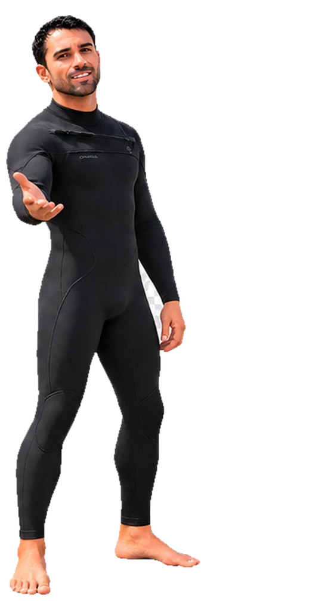
Cuéntame tu comunidad.
Escríbeme y hablamos sin compromiso: qué tienes montado, qué te está costando y si esto tiene sentido para ti. De esa llamada sales con dos o tres movimientos para aplicar esa misma semana, decidas lo que decidas. Y si seguimos, lo primero que recibes es un plan escrito para tu negocio: tu punto de partida, tu objetivo con cifra y tu calendario. No hay plantilla, y no hay dos iguales. Y si veo que no puedo ayudarte, te lo digo.